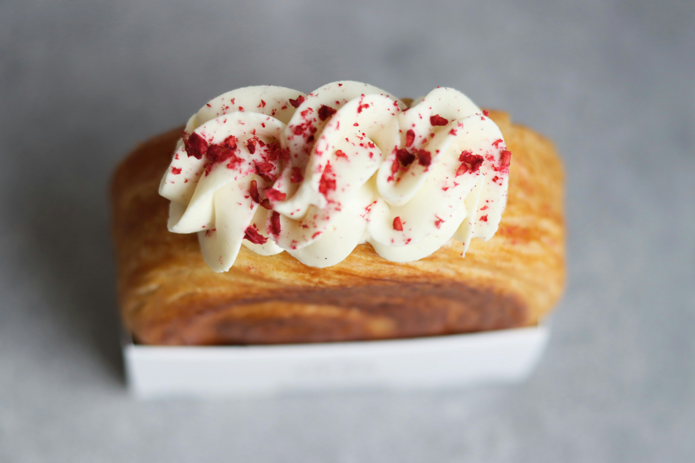

Yemek tutkunlarının buluşma noktası olan sitemize hoş geldiniz! Burada, mutfakların büyülü dünyasına adım atacak, damak tadınıza hitap eden tariflerle tanışacaksınız. Her bir tarifimiz, özenle seçilmiş malzemelerle hazırlanmış, sizi ve sevdiklerinizi keyifli bir yemeğe davet ediyor. İster pratik, hızlı yemekler arıyor olun, ister özenle hazırlanmış özel sofralar için ilham arayın, doğru yerdesiniz.
Daha Fazla Tarif İçin Tıklayınız
Mini Milföy Topları

Malzemeler:
- 1 paket milföy hamuru (yaklaşık 10-12 adet kare milföy)
- 1 su bardağı rendelenmiş kaşar peyniri (veya istediğiniz başka bir peynir türü)
- 1/2 su bardağı beyaz peynir (ezilmiş)
- Susam veya çörek otu (isteğe bağlı, üzeri için)
- Tuz ve karabiber (isteğe bağlı)
Yapılışı:
- Fırınınızı 180°C'ye (350°F) önceden ısıtın.
- Milföy hamurlarını buzluktan çıkarıp biraz çözdürün. Hamurların yumuşamasını bekleyin, ama tamamen erimelerine gerek yok.
- Rendelenmiş kaşar peynirini ve beyaz peyniri bir kapta karıştırın. Tuz ve karabiber ekleyebilirsiniz, ama peyniri de yeterince tuzlu olduğu için eklemenize gerek kalmayabilir.
- Her bir kare milföy hamurunun ortasına biraz peynir karışımı koyun. Hamurların kenarlarını ortadaki peyniri kapatacak şekilde katlayın. Küçük toplar veya kareler şeklinde kapatabilirsiniz.
- Milföy toplarını fırından çıkardıktan sonra biraz soğumaya bırakın. Ilık veya soğuk olarak servis edebilirsiniz.
Deneyenler Yorumluyor!
-

Elif.y
“Mini milföy toplarını denedim ve gerçekten harika oldu! Yapımı çok kolay ve sonuç mükemmel. Peynir karışımının lezzeti hamurun hafifliğiyle birleşince çok lezzetli bir atıştırmalık ortaya çıktı. Ailem de bayıldı, özellikle sıcak servis edildiğinde enfes.”
-

Melisa.K
“Tarifi tam olarak takip ettim ve çok beğendim. Milföy topları çok çıtır ve peynirli iç harcı mükemmel uyum sağlıyor. Üzerine sürdüğüm yumurta sarısı ve çörek otu da harika bir tat kattı. Misafirlerim çok beğendi ve tekrar yapmamı istediler.”
-

Yıldız M.
“Bu tarif kesinlikle favorilerimden biri oldu. Hamur çok çıtır çıtır ve peynir içi çok lezzetli. Birkaç tane farklı iç harcı denedim ve hepsi çok güzel oldu. Ayrıca, hazırlık süresi de oldukça kısa. Şimdi bu tarifi düzenli olarak yapmayı düşünüyorum.”